Navigation Light Configurations
Learn to identify vessels by their navigation light patterns from different angles
Power-Driven Vessel Underway
Front
Port
Aft
Configuration: Masthead light (white, forward, 225° arc), sidelights (red port/green starboard, 112.5° each), stern light (white, aft, 135° arc)
When Displayed: All power-driven vessels underway at night or in restricted visibility (Rule 23)
Visibility Range: Masthead light 5-6 NM (3 NM for vessels <50m), sidelights 2-3 NM, stern light 2-3 NM
Power-Driven Vessel Over 50m
Front
Port
Aft
Configuration: Two white masthead lights in a vertical line (aft higher than forward), red port/green starboard sidelights, white stern light
When Displayed: Power-driven vessels ≥50 meters in length underway (Rule 23(a)(i))
Key Feature: The second (aft) masthead light MUST be at least 4.5m higher than the forward light and positioned abaft (behind) it. This is the distinguishing feature of large vessels.
Visibility: Masthead lights 6 NM, sidelights 3 NM, stern light 3 NM
Sailing Vessel Underway
Front
Port
Aft
Configuration: Red port and green starboard sidelights (112.5° each), white stern light (135°). NO masthead light.
When Displayed: Sailing vessels underway NOT using propelling machinery (Rule 25(a))
Key Distinction: The ABSENCE of a white masthead light distinguishes sailing vessels from power-driven vessels. If the engine is used, the vessel must display a cone apex-down and show power-driven vessel lights.
Visibility: Sidelights 2 NM (1 NM for vessels <20m), stern light 2 NM
Alternative (vessels <20m): May carry combined sidelights and stern light in a single tricolor lantern at the masthead (Rule 25(b))
Vessel Engaged in Trawling
Front
Port
Aft
Configuration: GREEN all-round light OVER white all-round light (both 360°), plus sidelights and stern light when making way through the water
When Displayed: Vessel engaged in trawling - dragging a dredge net or other apparatus through the water (Rule 26(b))
Key Distinction: GREEN OVER WHITE distinguishes trawling from other fishing methods (other fishing = RED OVER WHITE). "Green for trawl" is the memory aid.
Additional Signals:
- If making way: display sidelights and stern light
- If vessel >50m: may show white all-round light above green light
- Optional: white all-round light(s) showing direction of outlying gear >150m
- By day: shape of two cones apex together (vessel <20m not required)
Visibility: All-round lights 2 NM minimum
Vessel Towing (Length of Tow Exceeds 200m)
Front
Port
Aft
Configuration: THREE white masthead lights in a vertical line, sidelights, yellow towing light above white stern light
When Displayed: Vessel towing when length of tow from stern of towing vessel to after end of tow EXCEEDS 200 meters (Rule 24(a)(i))
Key Features:
- 3 white masthead lights indicate tow >200m (2 lights if tow ≤200m)
- Yellow towing light has same characteristics as stern light (135° arc)
- Yellow light positioned vertically above stern light
- Towed vessel displays sidelights and stern light
- Diamond shape displayed by day when tow >200m
Visibility: Masthead lights 5 NM, yellow towing light 2 NM
Vessel Not Under Command
Front
Port
Aft
Configuration: TWO red all-round lights in vertical line (360° visibility). NO masthead, sidelights, or stern lights unless making way.
When Displayed: Vessel not under command - unable to maneuver as required by COLREGS due to exceptional circumstances (Rule 27(a))
Definition: A vessel which through some exceptional circumstance (breakdown, damage, or other malfunction) is unable to maneuver and therefore cannot keep out of the way of another vessel.
Examples:
- Main engine failure or breakdown
- Steering gear failure
- Damage to propulsion or steering systems
- Loss of power
Additional Signals:
- If making way through water: also display sidelights and stern light
- By day: two black balls in vertical line
Priority: NUC vessels have right of way over all other vessels except vessels constrained by draft in narrow channels. All vessels must keep clear of a NUC vessel.
Visibility: Red all-round lights 2 NM minimum
Vessel Restricted in Ability to Maneuver
Front
Port
Aft
Configuration: RED-WHITE-RED all-round lights in vertical line (360° visibility), plus normal navigation lights when making way
When Displayed: Vessel restricted in ability to maneuver due to the nature of her work (Rule 27(b))
Examples of RAM Vessels:
- Laying, servicing, or picking up navigation marks, submarine cables, or pipelines
- Dredging operations
- Underwater operations (diving, etc.)
- Replenishment or transferring persons, provisions, or cargo while underway
- Launching or recovering aircraft
- Mine clearance operations
Additional Signals:
- If making way: masthead light(s), sidelights, and stern light
- Optional: Green all-round lights on safe side, Red all-round lights on obstructed side
- By day: ball-diamond-ball shape in vertical line
Meaning: Other vessels must keep clear; this vessel cannot maneuver easily due to her work
Visibility: All-round lights 2 NM minimum
Vessel Constrained by Draught
Front
Port
Aft
Configuration: Full power-driven vessel lights (Rule 23: masthead light(s), sidelights, stern light) PLUS three all-round red lights in a vertical line where they can best be seen (360° visibility). By day: a black cylinder.
When Displayed: Power-driven vessel whose draught in relation to available depth and width of water severely restricts her ability to deviate from her course (Rule 28)
Definition (Rule 3(h)): A power-driven vessel which, because of her draught in relation to the available depth and width of navigable water, is severely restricted in her ability to deviate from the course she is following.
Rule 28 Summary:
- May exhibit three all-round red lights in a vertical line (optional signal)
- Or a cylinder (day shape)
- Displayed in addition to lights prescribed for power-driven vessels in Rule 23
- Exhibited where they can best be seen
Key Distinction: Three red lights (vs two for NUC or aground). This vessel is underway and displays full navigation lights plus the three red lights. The cylinder day shape (black, diameter at least 0.6m, height twice diameter) distinguishes from other vessel types.
Priority (Rule 18(d)): Other vessels shall, if circumstances admit, avoid impeding the safe passage of a vessel constrained by her draught. The constrained vessel shall navigate with particular caution.
Visibility: Masthead/sidelights/stern as per Rule 23; red all-round lights 2 NM minimum
Vessel Aground
Front
Port
Aft
Configuration: Anchor lights (fore and stern white all-round lights) PLUS two red all-round lights in a vertical line (360° visibility). By day: three black balls in a vertical line in addition to anchor ball(s).
When Displayed: Vessel aground - unable to move due to touching the bottom (Rule 30(d))
Rule 30(d) Summary:
- (i) Two all-round red lights in a vertical line
- (ii) Three black balls in a vertical line (day shape)
- Displayed in addition to the normal anchor lights prescribed in Rule 30(a) and (b)
Key Distinction: A vessel aground shows the same two red lights as a vessel not under command (NUC), but an aground vessel ALSO displays anchor lights (white). A NUC vessel does not display anchor lights unless at anchor. The three balls by day distinguish aground from NUC (NUC uses two balls).
Exemption: A vessel of less than 12 metres in length when aground need not exhibit the red lights and three balls (Rule 30(f))
Visibility: Anchor lights as per Rule 30; red all-round lights 2 NM minimum
International Maritime Signal Flags
Each flag represents a letter. Meanings differ between International Code (merchant/marine) and NATO (naval) usage.
Ship Day Shapes (Day Signals)
Daytime signals used by vessels to indicate their status or activity.

Ball
Indicates: Vessel at anchor (Rule 30)
Black sphere, diameter at least 0.6 meters. Displayed in the forepart where it can best be seen.

Cone
Indicates: Sailing vessel proceeding under sail and also being propelled by machinery (Rule 25)
Black cone, apex downward, base diameter at least 0.6m. Displayed forward where it can best be seen.

Diamond
Indicates: Vessel towing where length of tow exceeds 200 meters (Rule 24)
Black diamond shape, at least 0.6m diameter. Displayed where it can best be seen by both towing and towed vessel.

Two Cones Apex Together
Indicates: Vessel engaged in fishing with restricted ability to maneuver (Rule 26)
Two black cones with apexes together. Base diameter at least 0.6m each. Displayed where they can best be seen.

Cylinder
Indicates: Vessel constrained by her draught (Rule 28)
Black cylinder, diameter at least 0.6m, height twice its diameter. Displayed where it can best be seen.

Two Balls (Vertical)
Indicates: Vessel not under command (Rule 27)
Two black balls in vertical line. Indicates vessel unable to maneuver as required by the rules due to exceptional circumstance.

Three Balls (Triangle)
Indicates: Vessel engaged in mine clearance operations (Rule 27(f))
Three black balls in a triangle: one at or near the foremast head and one at each end of the fore yard.

Ball-Diamond-Ball
Indicates: Vessel restricted in her ability to maneuver (Rule 27)
Vertical arrangement: ball (top), diamond (middle), ball (bottom). Indicates vessel restricted by nature of her work.

Three Balls (Vertical)
Indicates: Vessel aground (Rule 30(d))
Three black balls in a vertical line. Displayed in addition to anchor balls where they can best be seen.

Dredging/Underwater Ops
Indicates: Vessel engaged in dredging or underwater operations (Rule 27(d))
Centre: ball-diamond-ball (restricted in ability to maneuver). Two diamonds vertical on safe side to pass; two balls vertical on obstructed/danger side.

Fishing with Outlying Gear
Indicates: Vessel engaged in fishing with gear extending more than 150m (Rule 26(c))
Two cones apex together plus one cone apex toward the outlying gear. Displayed where they can best be seen.

Two Diamonds
Indicates: Safe side to pass a vessel restricted in ability to maneuver (Rule 27(d)(ii))
Two black diamonds in a vertical line. Displayed on the side on which it is safe for other vessels to pass.
Buoys
Navigation buoys mark channels, hazards, and safe water. The IALA Maritime Buoyage System provides a unified system worldwide.
Lateral Marks
Purpose
Lateral markers are used for well-defined channels in conjunction with a conventional direction of buoyage. They indicate the port and starboard sides of the route to be followed.
Port
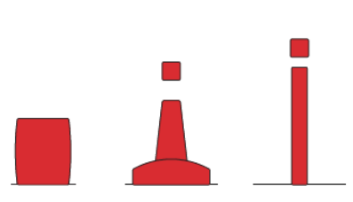
Starboard
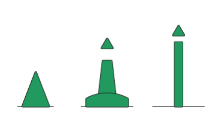
Lights
When fitted, may have any rhythm other than composite group flashings (2+1), which are used on modified lateral markers to indicate a preferred channel. For example:
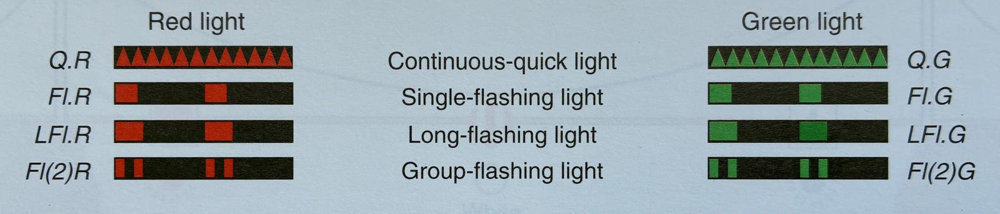
Preferred channel markers
Preferred channel markers are red and green horizontally banded buoys used at channel junctions to indicate the main, deeper, or preferred route. The top band color indicates the preferred channel side.
Port preferred
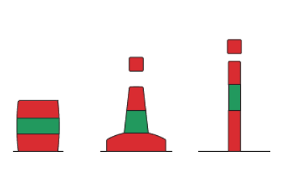
Starboard preferred
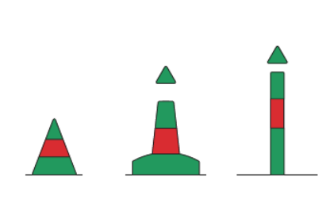
Lights
Composite group flashing (2+1) indicates a preferred channel. Red (2+1) = port preferred; green (2+1) = starboard preferred.
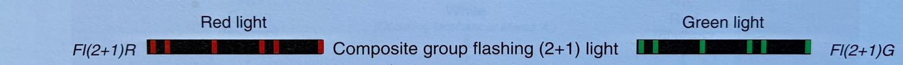
Cardinal Marks
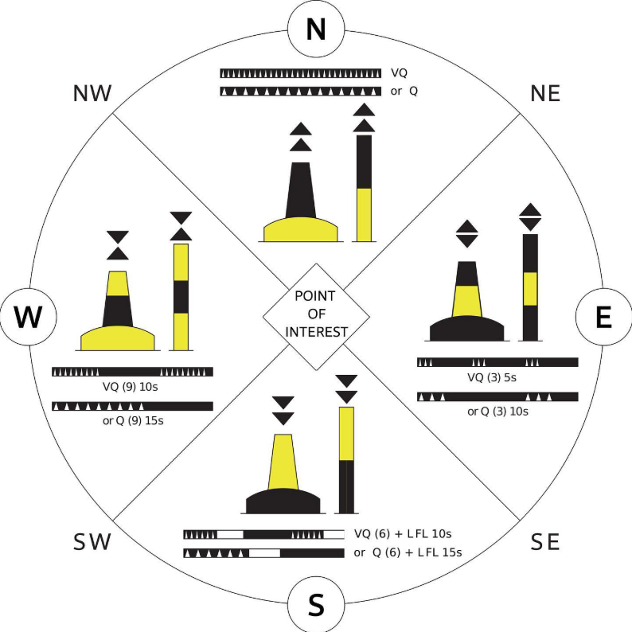
Purpose: Indicate the compass direction of safe water relative to the mark (North, East, South, West).
Isolated Danger Marks
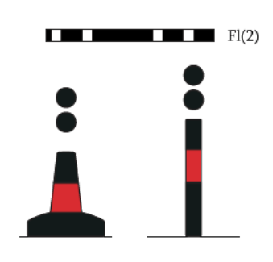
Purpose: Mark a hazard with navigable water all around.
Safe Water Marks
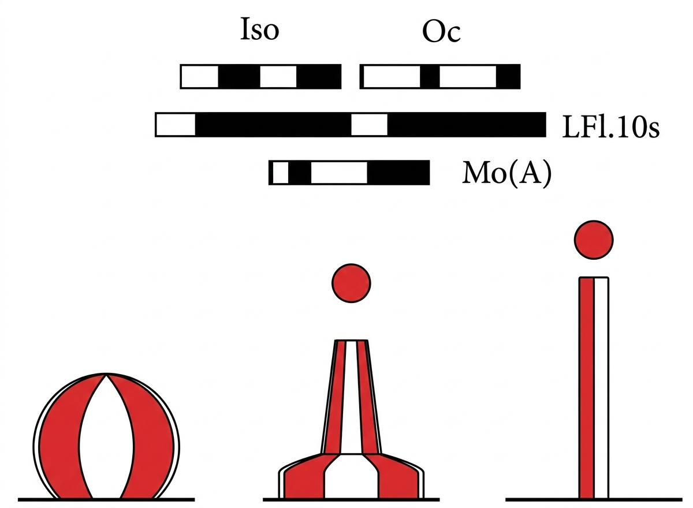
Purpose: Indicate the approach to a fairway or mid-channel.
Special Marks
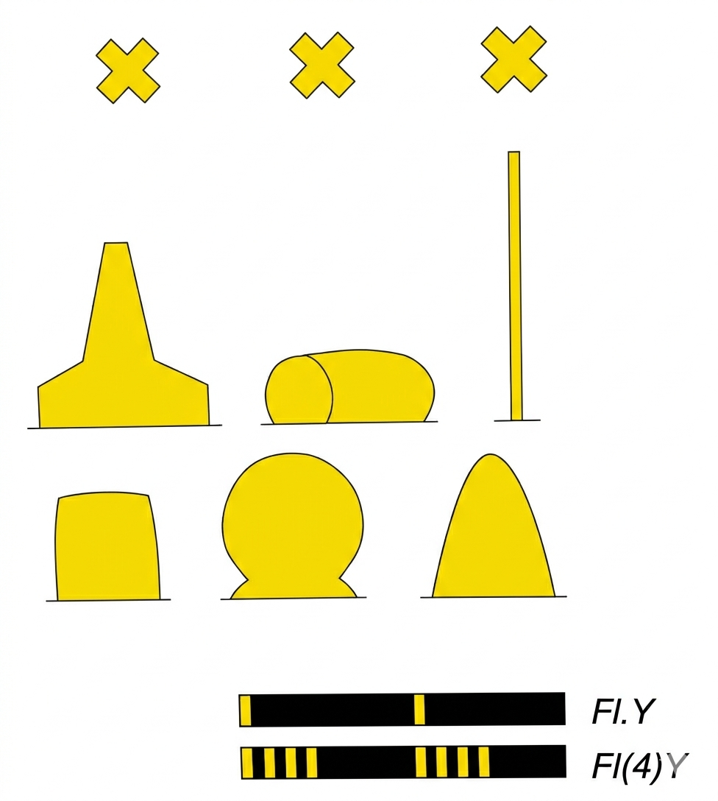
Purpose: Indicate areas or features such as traffic separation schemes, spoil grounds, or military exercise zones.
Emergency Wreck Marking Buoy
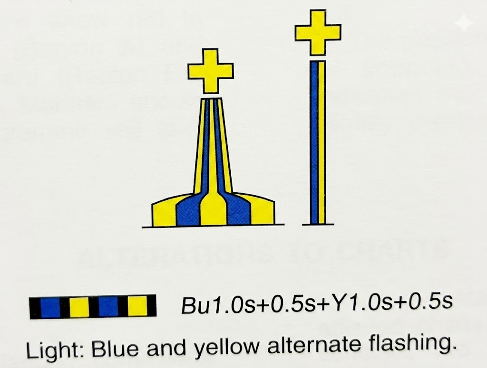
Purpose: Temporary mark to warn of newly sunken vessels or maritime hazards not yet formally documented. Deployed for 24-72 hours after a wreck occurs, before being replaced with permanent markings.
Identification: Pillar or spar shape; blue and yellow alternating vertical stripes; yellow "+" topmark if fitted; occulting alternating light. Often labelled "WRECK". No other navigation mark uses blue.
IALA Maritime Buoyage System
International Association of Marine Aids to Navigation and Lighthouse Authorities (IALA) divides the world into two regions with different lateral mark colours.

Region A: Red buoys mark port side when entering from seaward. Europe, Africa, Gulf, most of Asia, Australia, New Zealand, Indian Ocean, South Atlantic, Western Pacific.
Region B: Green buoys mark port side when entering from seaward. Americas, Caribbean, Japan, Korea, Philippines, North and Central Pacific. With a Western Pacific Region B enclave around Japan, Korea, and Philippines.
Key boundaries: Atlantic boundary approximately 20°W; Pacific boundaries along the Date Line (180°) and 120°W meridian.
Note: Cardinal marks, isolated danger, safe water, and special marks are identical in both regions.
Chart examples